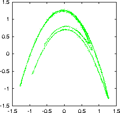
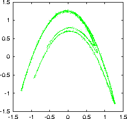
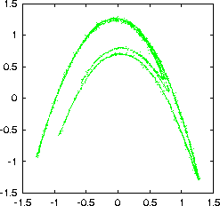

Performs one iteration of nonlinear projective noise reduction. This routine can work in a pipeline without having to read in the whole data first. Output file (the cleaned sequence) is file_c. As a second column, the difference between original and cleaned sequence is printed.
-m embedding dimension
-q dimension of manifold projected on
-r diameter of neighbourhood
-K maximal number of neighbours
-d delay (1)
-k minimal number of neighbours (m)
-T maximal time in the past considered as neighbours (all)
-w range represented by each centre (e/4)
-s stack depth (500)
-l number of points (whole file)
-x number of values to be skipped (0)
-c column to be read (1 or file,#)
-h show this message
Note: This routine does not use all available neighbours and may therefore be faster than the original program project.
This routine is based on
T. Schreiber and M. Richter
Nonlinear projective filtering in a data stream
preprint (1998).
> henon -l10000 > data > addnoise -v0.02 data > cat data_noisy | noise -m7 -q2 -r0.3 -K500 \ > | noise -m7 -q2 -r0.2 -K500 > data_noisy_c gnuplot> plot '< cat data_noisy | embed -d1' gnuplot> plot '< cat data_noisy_c | embed -d1'
